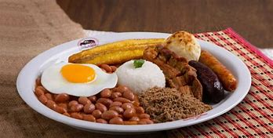
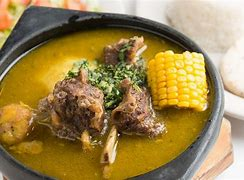

Bandeja Paisa

La Bandeja Paisa es uno de los platos más populares y emblemáticos de Colombia. Originaria de la región andina del país, es una comida completa que incluye varios tipos de carne, frijoles, arroz, plátano maduro, huevo frito, arepa y aguacate.
Leer más
Sancocho

El sancocho es un plato tradicional colombiano que se ha convertido en un símbolo de la cultura e identidad del país. Esta sopa contundente y nutritiva elaborada con una variedad de carnes, verduras y tubérculos, que pueden alternar según la región de Colombia, conjuga los sabores típicos de la gastronomía local.
Leer más